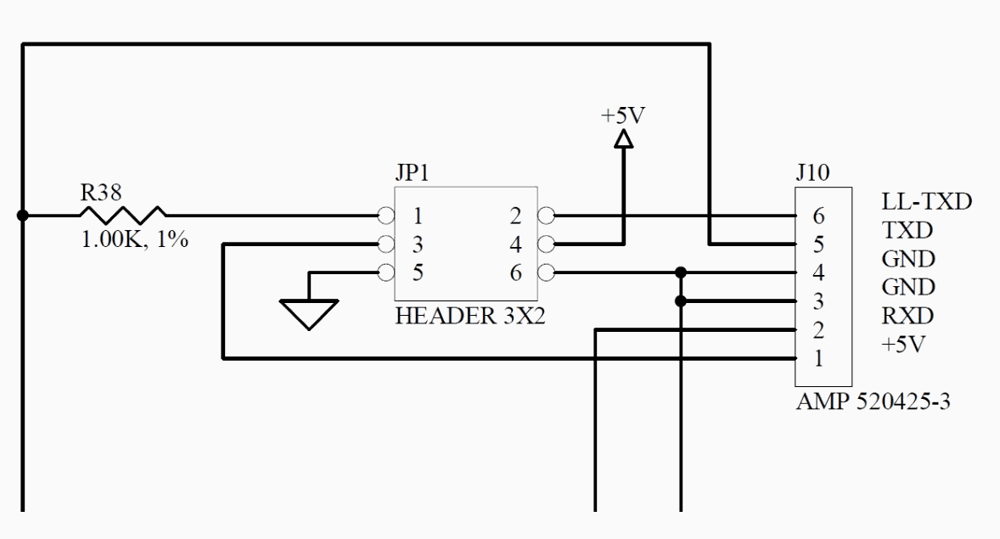
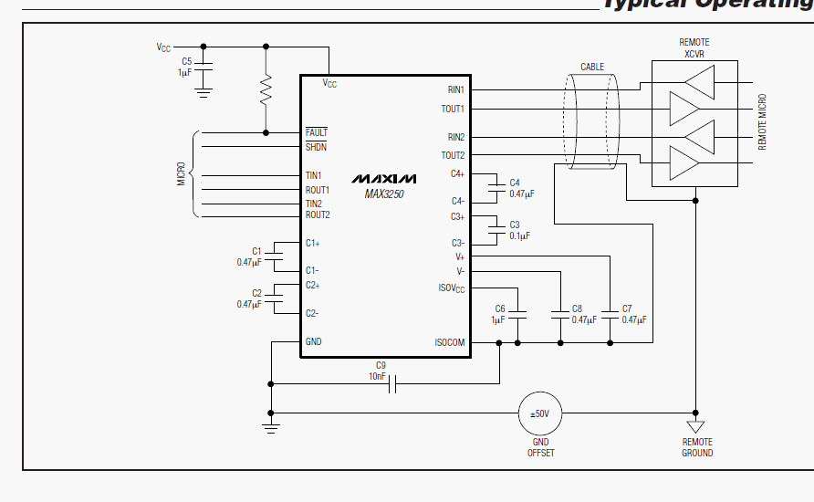

Click on picture to see larger picture.
The top set of jumper are for serial port 1 and the bottom set is for serial port 2
- The second mode of operation would be to use the +/-50V isolation mode that the serial chip is capable of. This would require the removal of both jumpers from JP1. If you look at the below diagram, you will notice that there are 2 different ground symbols at the bottom left and right of the diagram. The one on the left would be the ground for the internal working of the Gemini 2. The one on the right is a floating/isolated ground that is generated by the serial port chip. If this is the ground that is use to connect to the outside world, then this serial port will have up to +/-50V ground loop isolation. This mode cannot provide external power! Jumper pins 5 and 6 short these two signals together if it is in place.

Figure 2
- The third mode would use the R38 1K resistor to provide as additional 1K of isolation to the TXD line. (see figure 1) This would require installing a jumper between pins 1 and 2 and using pin 6 instead of pin 5 on the RJ-12 connector. It would also only be used with the second mode of operation. Both Jumpers 5/6 and 3/4 removed. If you are using long RS-232 cables this is the preferred mode.